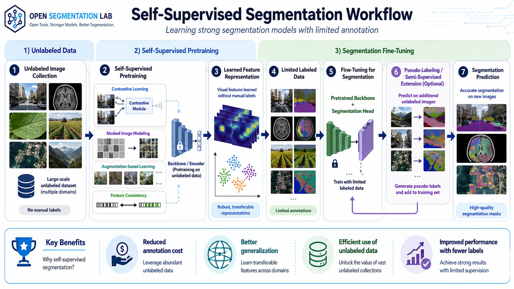

Why Annotation Cost Matters
Dense segmentation labels are expensive because annotators must trace boundaries or assign labels at pixel level. In medical imaging, agriculture, remote sensing, and industrial inspection, expert review may be required. Self-supervised learning helps by using unlabeled images before the final supervised segmentation stage.
Core Ideas for Self-Supervised Segmentation
Contrastive Learning
Learns invariance by pulling related augmented views together and pushing unrelated examples apart. For segmentation, local spatial detail must be preserved.
Masked Image Modeling
Hides image patches and trains the model to reconstruct missing content, encouraging contextual and structural features useful for dense prediction.
DINO-style Learning
Uses teacher-student self-distillation. Vision transformer attention can reveal object-like regions that are helpful for pseudo-mask discovery.
SAM-assisted Pseudo-labeling
Uses promptable or automatic masks as annotation candidates, then filters and maps them to task-specific semantic classes.
Suggested Pipeline
Pretrain Encoder
Use unlabeled domain images with contrastive learning, masked image modeling, or teacher-student representation learning.
Generate Pseudo Masks
Use clustering, attention maps, SAM prompts, or a weak teacher model to propose candidate masks.
Fine-tune Segmentation Head
Train a decoder or mask head with available labels and carefully filtered pseudo labels.
Evaluate Quality
Measure IoU, Dice, AP, or PQ on a trusted validation set with human-reviewed labels.
PyTorch Tutorial Lab
This step-by-step lab covers the self-supervised segmentation pipeline — pretraining an encoder without labels, generating and filtering pseudo masks, fine-tuning a segmentation model with mixed supervision, and evaluating results on a trusted validation set.
Step 1 — Self-Supervised Encoder Pretraining
Before any labeled data is used, the encoder is trained on unlabeled images to learn visual representations. Three approaches are shown: SimCLR (contrastive), DINOv2 (self-distillation), and MAE (masked reconstruction). Choose based on whether you want global embeddings, spatial patch features, or reconstruction-based learning.
SimCLR — Contrastive Representation Learning
SimCLR trains a ResNet encoder by pulling together embeddings of two augmented views of the same image (positive pair) and pushing apart embeddings of different images (negative pairs). The NT-Xent loss enforces this invariance.
import torch
import torch.nn as nn
import torch.nn.functional as F
from torchvision.models import resnet50
from torchvision import transforms
# ---------------------------------------------------------------
# Augmentation pipeline — the quality of augmentations is critical
# ---------------------------------------------------------------
# Strong color and crop augmentations force the encoder to learn
# class-level features rather than pixel-level shortcuts.
augment = transforms.Compose([
transforms.RandomResizedCrop(224, scale=(0.2, 1.0)),
transforms.RandomHorizontalFlip(),
transforms.ColorJitter(0.4, 0.4, 0.4, 0.1),
transforms.RandomGrayscale(p=0.2),
transforms.GaussianBlur(kernel_size=23),
transforms.ToTensor(),
transforms.Normalize([0.485, 0.456, 0.406], [0.229, 0.224, 0.225]),
])
# ---------------------------------------------------------------
# Encoder + projection head
# ---------------------------------------------------------------
# The projection head is used only during contrastive pretraining.
# It is discarded afterward, and only the encoder backbone is kept.
encoder = resnet50(weights=None)
encoder.fc = nn.Identity() # output: 2048-dim feature vector
projection = nn.Sequential(
nn.Linear(2048, 512),
nn.ReLU(inplace=True),
nn.Linear(512, 128), # contrastive embedding space
)
DEVICE = "cuda" if torch.cuda.is_available() else "cpu"
encoder = encoder.to(DEVICE)
projection = projection.to(DEVICE)
optimizer = torch.optim.AdamW(
list(encoder.parameters()) + list(projection.parameters()),
lr=3e-4, weight_decay=1e-4
)
# ---------------------------------------------------------------
# NT-Xent (Normalized Temperature-scaled Cross Entropy) loss
# ---------------------------------------------------------------
def nt_xent_loss(z1, z2, temperature=0.07):
"""
z1, z2: (N, D) normalized embeddings for two views of the same batch.
For each sample i, the positive pair is (z1[i], z2[i]).
All other combinations are negative pairs.
"""
z1 = F.normalize(z1, dim=1) # L2 normalize along embedding dim
z2 = F.normalize(z2, dim=1)
N = z1.size(0)
# Similarity matrix: each row is the similarity of one sample against all others.
# Shape: (N, N) — diagonal entries are positive pairs.
logits = z1 @ z2.T / temperature
# Labels: position i should match position i (diagonal is the target).
labels = torch.arange(N, device=z1.device)
# Cross-entropy treats each row as a classification problem over N classes.
# The model must identify which of the N samples is the true positive.
loss = F.cross_entropy(logits, labels)
return loss
# ---------------------------------------------------------------
# Pretraining loop on unlabeled images
# ---------------------------------------------------------------
EPOCHS = 100
for epoch in range(EPOCHS):
encoder.train(); projection.train()
epoch_loss = 0.0
for images_pil in unlabeled_loader:
# Generate two different augmented views of each image.
view_a = torch.stack([augment(img) for img in images_pil]).to(DEVICE)
view_b = torch.stack([augment(img) for img in images_pil]).to(DEVICE)
# Forward pass: embed both views
z_a = projection(encoder(view_a)) # (N, 128)
z_b = projection(encoder(view_b)) # (N, 128)
loss = nt_xent_loss(z_a, z_b, temperature=0.07)
optimizer.zero_grad()
loss.backward()
optimizer.step()
epoch_loss += loss.item()
print(f"Epoch {epoch+1:03d}/{EPOCHS} | loss {epoch_loss/len(unlabeled_loader):.4f}")
# Save the encoder backbone (without projection head) for downstream use.
torch.save(encoder.state_dict(), "simclr_encoder.pth")DINOv2 — Patch Features for Dense Prediction
DINOv2 was pretrained with self-distillation on large image collections. Its ViT patch tokens carry rich spatial information and can directly initialize segmentation models or be clustered to generate pseudo masks — no further pretraining required for many domains.
from PIL import Image
import torch
import torch.nn.functional as F
from transformers import AutoImageProcessor, AutoModel
import numpy as np
DEVICE = "cuda" if torch.cuda.is_available() else "cpu"
MODEL_ID = "facebook/dinov2-base" # variants: dinov2-small/base/large/giant
processor = AutoImageProcessor.from_pretrained(MODEL_ID)
dino = AutoModel.from_pretrained(MODEL_ID).to(DEVICE)
dino.eval()
image = Image.open("unlabeled_image.jpg").convert("RGB")
# ---------------------------------------------------------------
# Extract patch-level features
# ---------------------------------------------------------------
inputs = processor(images=image, return_tensors="pt").to(DEVICE)
with torch.no_grad():
outputs = dino(**inputs)
# last_hidden_state: (1, num_patches+1, hidden_dim)
# Index 0 is the [CLS] global token; indices 1: are patch tokens.
hidden = outputs.last_hidden_state # (1, 257, 768) for ViT-B/14
cls_token = hidden[:, 0, :] # (1, 768) — global image representation
patch_tokens = hidden[:, 1:, :] # (1, 256, 768) — spatial patch features
# L2-normalize patch features before clustering or similarity search
patch_feats = F.normalize(patch_tokens, dim=-1)
print(f"Patch features shape: {patch_feats.shape}") # (1, 256, 768)
# ---------------------------------------------------------------
# Reshape patches into a 2D spatial feature grid
# ---------------------------------------------------------------
# ViT-B/14 divides a 224x224 image into 16x16 patches of size 14x14.
# For a 512x512 input image, there would be 36x36 = 1296 patches.
H_patches = int(patch_feats.shape[1] ** 0.5) # assume square grid
W_patches = H_patches
feat_grid = patch_feats[0].reshape(H_patches, W_patches, -1) # (16, 16, 768)
# To use as a segmentation feature map, permute to (C, H, W) and upsample.
feat_map = feat_grid.permute(2, 0, 1).unsqueeze(0) # (1, 768, 16, 16)
feat_map = F.interpolate(feat_map,
size=image.size[::-1], # upsample to original (H, W)
mode="bilinear",
align_corners=False) # (1, 768, H, W)
print(f"Feature map at image resolution: {feat_map.shape}")
# This can be passed to a lightweight segmentation decoder.
# ---------------------------------------------------------------
# Simple K-means clustering of patch features (pseudo segmentation)
# ---------------------------------------------------------------
# Useful for exploring structure in unlabeled data.
from sklearn.cluster import KMeans
feats_np = patch_feats[0].cpu().numpy() # (256, 768)
kmeans = KMeans(n_clusters=5, random_state=0, n_init="auto")
labels = kmeans.fit_predict(feats_np) # (256,) cluster assignments
cluster_map = labels.reshape(H_patches, W_patches)
print(f"Cluster map shape: {cluster_map.shape}") # (16, 16)
# Upsample to image size for visualization.MAE — Masked Autoencoder Pretraining
MAE trains a ViT encoder to reconstruct randomly masked image patches from the visible patches. This forces the encoder to develop a rich contextual understanding of image structure. The decoder used during pretraining is discarded afterward.
import torch
import torch.nn as nn
import torch.nn.functional as F
# ---------------------------------------------------------------
# Random patch masking: keep (1-mask_ratio) fraction of patches
# ---------------------------------------------------------------
def random_patch_mask(patches, mask_ratio=0.75):
"""
Randomly select which patches to keep (visible) during pretraining.
Args:
patches: (B, N, D) — batch of patch embeddings
mask_ratio: fraction of patches to hide (0.75 hides 3/4 of patches)
Returns:
keep_ids: (B, K) indices of kept patches, where K = N * (1 - mask_ratio)
"""
B, N, D = patches.shape
K = int(N * (1 - mask_ratio)) # number of patches to keep
# Random noise for shuffling — argsort gives a random permutation
noise = torch.rand(B, N, device=patches.device)
keep_ids = noise.argsort(dim=1)[:, :K] # keep the K lowest-noise indices
return keep_ids # (B, K)
# ---------------------------------------------------------------
# MAE pretraining loop
# ---------------------------------------------------------------
DEVICE = "cuda" if torch.cuda.is_available() else "cpu"
EPOCHS = 200
# Assume encoder (ViT) and patch_embed and decoder are already defined.
# encoder: ViT that processes only visible patches
# decoder: lightweight ViT or MLP that reconstructs all patches from latent
optimizer = torch.optim.AdamW(
list(encoder.parameters()) + list(decoder.parameters()),
lr=1.5e-4, weight_decay=0.05,
)
for epoch in range(EPOCHS):
encoder.train(); decoder.train()
epoch_loss = 0.0
for images in unlabeled_loader:
images = images.to(DEVICE) # (B, 3, H, W)
# Patchify the image into (B, N, patch_size*patch_size*3) tokens.
patches = patch_embed(images) # (B, N, D)
keep_ids = random_patch_mask(patches, mask_ratio=0.75)
# Gather only the visible (non-masked) patches for the encoder.
# index must broadcast: keep_ids.unsqueeze(-1) is (B, K, 1)
visible = torch.gather(
patches,
dim=1,
index=keep_ids.unsqueeze(-1).expand(-1, -1, patches.size(-1))
) # (B, K, D) — only kept patches
# Encode the visible patches to produce latent representations.
latent = encoder(visible) # (B, K, latent_dim)
# Decoder reconstructs all N patches (masked + visible) from the latent.
# Masked patch positions receive a learnable mask token before decoding.
reconstructed = decoder(latent, keep_ids, total_patches=patches.size(1))
# reconstructed: (B, N, D)
# MSE reconstruction loss — computed on ALL patches (or only masked ones).
# Supervising only masked patches avoids trivially copying visible content.
mask_ids = torch.ones(patches.shape[:2], dtype=torch.bool, device=DEVICE)
for b in range(patches.size(0)):
mask_ids[b, keep_ids[b]] = False # visible patches are not supervised
# Normalize patch targets per-patch (standard MAE practice).
target = patches.detach()
mean = target.mean(dim=-1, keepdim=True)
var = target.var(dim=-1, keepdim=True)
target = (target - mean) / (var + 1e-6).sqrt()
loss = F.mse_loss(reconstructed[mask_ids], target[mask_ids])
optimizer.zero_grad()
loss.backward()
optimizer.step()
epoch_loss += loss.item()
if (epoch + 1) % 20 == 0:
print(f"Epoch {epoch+1:03d}/{EPOCHS} | recon loss {epoch_loss/len(unlabeled_loader):.4f}")
# Save encoder weights (decoder is discarded after pretraining).
torch.save(encoder.state_dict(), "mae_encoder.pth")Step 2 — Pseudo-Mask Generation
Pseudo masks are candidate labels generated from the pretrained encoder without human annotation. This step shows three generation strategies: DINO attention maps, SAM automatic masks, and K-means clustering. All three require filtering before use as training targets.
import torch
import torch.nn.functional as F
import numpy as np
from PIL import Image
from pathlib import Path
from transformers import AutoImageProcessor, AutoModel
from segment_anything import SamAutomaticMaskGenerator, sam_model_registry
from sklearn.cluster import KMeans
DEVICE = "cuda" if torch.cuda.is_available() else "cpu"
# ================================================================
# Strategy A: DINO attention-based foreground mask
# ================================================================
# DINOv2 head attention maps often highlight object boundaries
# and foreground regions without any supervision.
def dino_attention_mask(image_pil, threshold=0.5, model_id="facebook/dinov2-base"):
"""
Extract foreground pseudo mask from DINOv2 [CLS] attention.
Returns a (H, W) binary numpy array.
"""
processor = AutoImageProcessor.from_pretrained(model_id)
model = AutoModel.from_pretrained(model_id,
output_attentions=True).to(DEVICE).eval()
inputs = processor(images=image_pil, return_tensors="pt").to(DEVICE)
with torch.no_grad():
outputs = model(**inputs)
# attentions: tuple of (1, num_heads, N+1, N+1) per layer
# Use the last layer's attention from [CLS] to all patch tokens.
last_attn = outputs.attentions[-1] # (1, heads, N+1, N+1)
cls_attn = last_attn[0, :, 0, 1:] # (heads, N_patches) — CLS row only
mean_attn = cls_attn.mean(0) # (N_patches,) — average over heads
# Reshape to spatial grid
n = int(mean_attn.shape[0] ** 0.5)
attn_map = mean_attn.reshape(n, n).cpu().numpy()
# Upsample to original image resolution
attn_up = np.array(
Image.fromarray(attn_map).resize(image_pil.size, Image.BILINEAR)
)
# Normalize to [0, 1] and threshold to get binary mask
attn_up = (attn_up - attn_up.min()) / (attn_up.max() - attn_up.min() + 1e-7)
return (attn_up > threshold).astype(np.uint8)
# ================================================================
# Strategy B: SAM automatic masks
# ================================================================
# SAM generates class-agnostic masks at multiple granularity levels.
# Filter heavily to keep only stable, large-enough candidates.
def sam_pseudo_masks(image_rgb_np, checkpoint="sam_vit_b_01ec64.pth"):
"""
Generate filtered instance-level pseudo masks using SAM.
Returns a list of (H, W) bool numpy arrays.
"""
sam = sam_model_registry["vit_b"](checkpoint=checkpoint).to(DEVICE)
gen = SamAutomaticMaskGenerator(
model=sam,
points_per_side=32, # denser grid finds smaller objects
pred_iou_thresh=0.88, # discard low-quality SAM predictions
stability_score_thresh=0.92, # discard masks unstable to threshold shifts
min_mask_region_area=500, # discard tiny mask fragments
)
masks = gen.generate(image_rgb_np)
# Keep only masks where SAM is confident and the region is reasonably sized.
filtered = [
m["segmentation"] # (H, W) bool
for m in masks
if m["predicted_iou"] > 0.90 and m["area"] > 600
]
return filtered
# ================================================================
# Strategy C: K-means clustering of DINOv2 patch features
# ================================================================
def kmeans_pseudo_mask(image_pil, n_clusters=5, model_id="facebook/dinov2-base"):
"""
Cluster DINOv2 patch features and return a (H, W) label map.
Each pixel value is a cluster id in [0, n_clusters-1].
"""
processor = AutoImageProcessor.from_pretrained(model_id)
model = AutoModel.from_pretrained(model_id).to(DEVICE).eval()
inputs = processor(images=image_pil, return_tensors="pt").to(DEVICE)
with torch.no_grad():
patch_tokens = model(**inputs).last_hidden_state[0, 1:, :] # (N, D)
feats_np = F.normalize(patch_tokens, dim=-1).cpu().numpy() # (N, D)
n = int(feats_np.shape[0] ** 0.5) # patch grid side
labels = KMeans(n_clusters=n_clusters, n_init="auto",
random_state=0).fit_predict(feats_np) # (N,)
label_map = labels.reshape(n, n) # (n, n) cluster ids
# Upsample cluster map back to image resolution.
label_img = Image.fromarray(label_map.astype(np.uint8))
label_full = np.array(
label_img.resize(image_pil.size, Image.NEAREST)
)
return label_full # (H, W) with values in [0, n_clusters-1]
# ================================================================
# Save pseudo masks for a dataset of unlabeled images
# ================================================================
image_dir = Path("data/unlabeled/images/")
pseudo_dir = Path("data/pseudo_masks/")
pseudo_dir.mkdir(parents=True, exist_ok=True)
for img_path in sorted(image_dir.glob("*.png")):
image_pil = Image.open(img_path).convert("RGB")
# Choose Strategy A, B, or C depending on your use case.
pseudo = dino_attention_mask(image_pil, threshold=0.4)
Image.fromarray(pseudo * 255).save(pseudo_dir / img_path.name)
print(f"Saved pseudo masks for {len(list(image_dir.glob('*.png')))} images.")- DINO attention thresholds are dataset-dependent — inspect several images manually to choose the right threshold value.
- SAM masks are class-agnostic and need a separate classification step to assign semantic labels.
- K-means clusters do not correspond to semantic classes — you must manually map cluster ids to class ids using a few labeled examples.
- Always save pseudo masks as PNG files (not JPEG) to avoid lossy compression that corrupts label pixel values.
Step 3 — Fine-tuning with Mixed Supervision
Fine-tuning mixes a small set of human-labeled images with the larger pool of pseudo-labeled images. The key is to weight pseudo labels by confidence and use a higher-trust loss weight for verified labels. This prevents low-quality pseudo masks from dominating the gradient signal.
ignore_index=255 works in standard segmentation.
import torch
import torch.nn as nn
import torch.nn.functional as F
from torch.optim import AdamW
from torch.optim.lr_scheduler import PolynomialLR
DEVICE = "cuda" if torch.cuda.is_available() else "cpu"
NUM_CLASSES = 4
EPOCHS = 60
# ---------------------------------------------------------------
# Load pretrained encoder and attach a segmentation head
# ---------------------------------------------------------------
# Replace with your actual model class (U-Net, SegFormer, etc.)
# Here we show a U-Net-style model initialized from SimCLR encoder weights.
model = UNet(num_classes=NUM_CLASSES).to(DEVICE)
# Load pretrained encoder weights into the model's encoder portion.
pretrained_weights = torch.load("simclr_encoder.pth", map_location=DEVICE)
# Adapt key names if the pretrained dict uses different prefixes.
model.enc1.load_state_dict(
{k.replace("layer1.", ""): v for k, v in pretrained_weights.items()
if k.startswith("layer1.")},
strict=False
)
print("Pretrained encoder weights loaded (partial transfer).")
# ---------------------------------------------------------------
# Optimizer and scheduler
# ---------------------------------------------------------------
criterion = nn.CrossEntropyLoss(ignore_index=255) # ignore void / uncertain pixels
optimizer = AdamW(model.parameters(), lr=3e-4, weight_decay=1e-2)
scheduler = PolynomialLR(optimizer, total_iters=EPOCHS, power=0.9)
# ---------------------------------------------------------------
# Mixed supervision loss function
# ---------------------------------------------------------------
def mixed_supervision_loss(logits, gt_masks, pseudo_masks,
pseudo_conf, pseudo_weight=0.4, conf_thresh=0.85):
"""
Combines a fully-supervised loss on verified labels with a
confidence-weighted pseudo-label loss on unlabeled images.
Args:
logits: (N, C, H, W) raw model output
gt_masks: (N, H, W) integer class labels, 255 = ignore
pseudo_masks: (N, H, W) pseudo class labels, 255 = ignore
pseudo_conf: (N, H, W) per-pixel confidence in [0, 1]
pseudo_weight: scalar weight applied to the pseudo loss term
conf_thresh: confidence below this is treated as ignore (255)
Returns:
combined scalar loss
"""
# Supervised loss: only on pixels with valid ground-truth labels
supervised_loss = criterion(logits, gt_masks)
# Pseudo loss: mask out low-confidence pseudo labels before computing CE
# Set low-confidence positions to ignore_index so they contribute 0 gradient.
filtered_pseudo = pseudo_masks.clone()
low_conf = pseudo_conf < conf_thresh
filtered_pseudo[low_conf] = 255 # will be ignored by criterion
pseudo_loss = criterion(logits, filtered_pseudo)
# Weighted combination: trust real labels more than pseudo labels
return supervised_loss + pseudo_weight * pseudo_loss
# ---------------------------------------------------------------
# Training loop
# ---------------------------------------------------------------
best_loss = float("inf")
for epoch in range(EPOCHS):
model.train()
epoch_loss = 0.0
# train_loader yields batches with keys:
# "image" : (N, 3, H, W) float32 normalized
# "gt_mask" : (N, H, W) int64 ground-truth class ids
# "pseudo_mask" : (N, H, W) int64 pseudo class ids
# "pseudo_confidence": (N, H, W) float32 per-pixel confidence
for batch in train_loader:
images = batch["image"].to(DEVICE)
gt_masks = batch["gt_mask"].to(DEVICE)
pseudo = batch["pseudo_mask"].to(DEVICE)
pseudo_conf = batch["pseudo_confidence"].to(DEVICE)
logits = model(images)
loss = mixed_supervision_loss(
logits, gt_masks, pseudo, pseudo_conf,
pseudo_weight=0.4, conf_thresh=0.85
)
optimizer.zero_grad()
loss.backward()
torch.nn.utils.clip_grad_norm_(model.parameters(), max_norm=1.0)
optimizer.step()
epoch_loss += loss.item()
scheduler.step()
avg = epoch_loss / len(train_loader)
print(f"Epoch {epoch+1:03d}/{EPOCHS} | loss {avg:.4f} | lr {scheduler.get_last_lr()[0]:.2e}")
if avg < best_loss:
best_loss = avg
torch.save({"epoch": epoch, "model": model.state_dict(),
"loss": avg}, "ssl_seg_best.pth")- Set
ignore_index=255on all uncertain pseudo pixels — including them in the loss with low confidence hurts training more than skipping them. - Start with a low pseudo weight (0.3–0.5) and increase it only if the pseudo masks are verified to be high quality.
- Monitor the supervised loss and pseudo loss separately — if the pseudo loss rises while supervised loss falls, the pseudo labels may be conflicting with the real labels.
- Save checkpoints based on validation mIoU on human-labeled examples, not total training loss.
Step 4 — Evaluation on Trusted Labels
Even though most training data is unlabeled, evaluation must always use human-verified labels. This step computes mIoU and Dice using the same confusion matrix approach as the semantic segmentation lab, and adds a qualitative pseudo-label audit to detect silent label noise before it reaches training.
import torch
import numpy as np
from PIL import Image
from pathlib import Path
from torchvision.transforms import v2 as T
from torchvision.transforms.v2 import InterpolationMode
DEVICE = "cuda" if torch.cuda.is_available() else "cpu"
NUM_CLASSES = 4
# ---------------------------------------------------------------
# Load best checkpoint
# ---------------------------------------------------------------
ckpt = torch.load("ssl_seg_best.pth", map_location=DEVICE)
model = UNet(num_classes=NUM_CLASSES).to(DEVICE)
model.load_state_dict(ckpt["model"])
model.eval()
print(f"Checkpoint: epoch {ckpt['epoch']}, loss {ckpt['loss']:.4f}")
# ---------------------------------------------------------------
# Standard confusion matrix evaluation (same as semantic lab)
# ---------------------------------------------------------------
conf_matrix = np.zeros((NUM_CLASSES, NUM_CLASSES), dtype=np.int64)
with torch.no_grad():
for images, masks in trusted_val_loader:
images = images.to(DEVICE)
preds = model(images).argmax(dim=1).cpu().numpy()
gt = masks.numpy()
# Exclude ignore pixels (boundary or unlabeled) from the confusion matrix.
valid = gt != 255
np.add.at(conf_matrix, (gt[valid], preds[valid]), 1)
# Per-class IoU
per_class_iou = []
per_class_dice = []
for cls in range(NUM_CLASSES):
tp = conf_matrix[cls, cls]
fp = conf_matrix[:, cls].sum() - tp
fn = conf_matrix[cls, :].sum() - tp
denom_iou = tp + fp + fn
denom_dice = conf_matrix[cls, :].sum() + conf_matrix[:, cls].sum()
per_class_iou.append(tp / denom_iou if denom_iou > 0 else 0.0)
per_class_dice.append(2*tp / denom_dice if denom_dice > 0 else 0.0)
miou = np.mean(per_class_iou)
mean_dice = np.mean(per_class_dice)
pixel_accuracy = conf_matrix.diagonal().sum() / conf_matrix.sum()
print(f"\n=== SSL Segmentation Results (trusted val) ===")
print(f"mIoU: {miou:.4f}")
print(f"Mean Dice: {mean_dice:.4f}")
print(f"Pixel Accuracy: {pixel_accuracy:.4f}")
print("\nPer-class IoU:")
for cls, iou in enumerate(per_class_iou):
print(f" Class {cls}: {iou:.4f}")
# ---------------------------------------------------------------
# Pseudo-label quality audit (run before training, not after)
# ---------------------------------------------------------------
def audit_pseudo_labels(pseudo_dir, gt_dir, num_samples=20):
"""
Compare pseudo masks against available ground truth on a sample of
images to estimate pseudo-label accuracy before using them for training.
"""
pseudo_paths = sorted(Path(pseudo_dir).glob("*.png"))[:num_samples]
accuracies = []
for pp in pseudo_paths:
gt_path = Path(gt_dir) / pp.name
if not gt_path.exists():
continue
pseudo = np.array(Image.open(pp)) # (H, W) pseudo class ids
gt = np.array(Image.open(gt_path)) # (H, W) real class ids
valid = gt != 255
if valid.sum() == 0:
continue
acc = (pseudo[valid] == gt[valid]).mean()
accuracies.append(acc)
mean_acc = np.mean(accuracies) if accuracies else 0.0
print(f"\nPseudo-label audit ({len(accuracies)} images):")
print(f" Mean pixel accuracy vs. GT: {mean_acc:.4f}")
print(f" Min: {min(accuracies):.4f} Max: {max(accuracies):.4f}")
if mean_acc < 0.6:
print(" WARNING: pseudo-label accuracy is low — review filtering thresholds.")
return mean_acc
audit_pseudo_labels("data/pseudo_masks/", "data/train/masks/")- Always evaluate on human-verified labels — pseudo masks cannot be used as validation targets because they are what you are trying to improve.
- Run the pseudo-label audit on a sample of images with known ground truth before committing to a full training run.
- Compare SSL-pretrained results against a fully-supervised baseline to quantify how much annotation cost was saved at each mIoU level.
- Track whether adding more pseudo labels improves or hurts mIoU — if adding more data hurts, your pseudo labels are too noisy for those images.